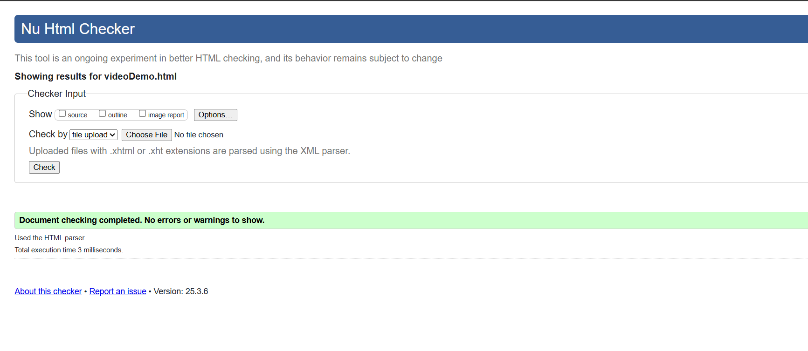
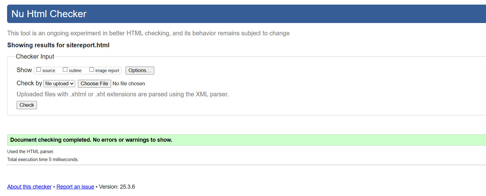
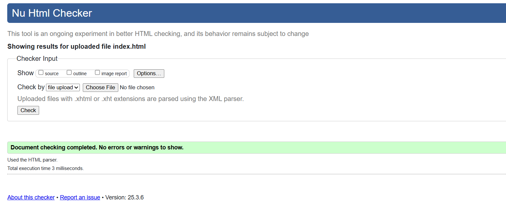
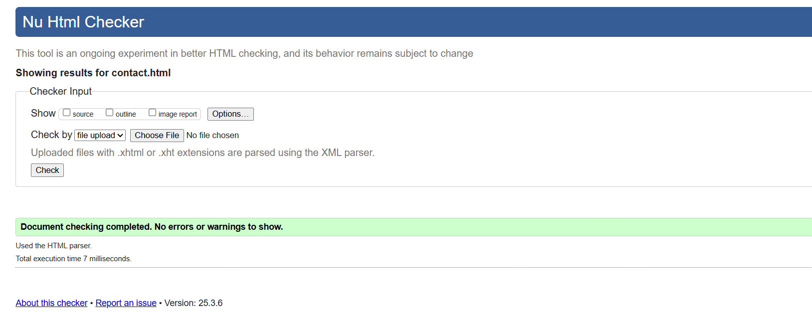
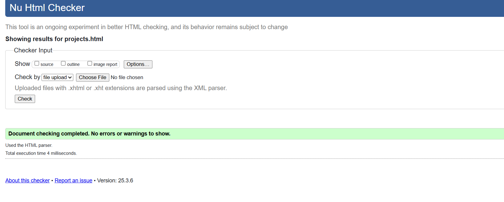
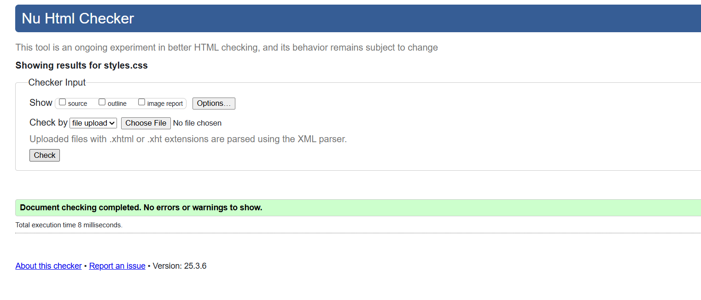

Site Development Report
Development Experience
Throughout this term, I've embarked on an exciting journey into web development. Starting with minimal knowledge, I've learned the fundamental building blocks of the web: HTML for structure, CSS for styling, and basic JavaScript for interactivity.
One of the biggest challenges I faced was understanding responsive design. Initially, my layouts would break on mobile devices, but through research and practice, I learned to use media queries and flexible grid systems effectively.
The debugging process was particularly enlightening. I learned to use browser developer tools to inspect elements, test responsive layouts, and troubleshoot CSS issues. This hands-on experience has made me more confident in tackling web development challenges.
Design Decisions
Color Scheme
The color scheme was chosen to create a professional and modern look. The blue primary color represents trust and professionalism, while the dark gray provides contrast for text elements. The light background ensures good readability and creates a clean, minimalist aesthetic.
Typography
I chose Poppins as the primary font for its modern, geometric design and excellent readability across different screen sizes. The font weights are used strategically: 600 for headings, 400 for body text, and 300 for subtle elements.
Validation Reports
HTML Validation
    CSS Validation
Video Demonstration
View the complete video demonstration of this portfolio website on YouTube: Portfolio Website Demonstration
References & Inspiration
- MDN Web Docs - Primary resource for HTML and CSS documentation
- CSS-Tricks - Inspiration for grid layouts and responsive design
- Dribbble - Design inspiration for color schemes and typography